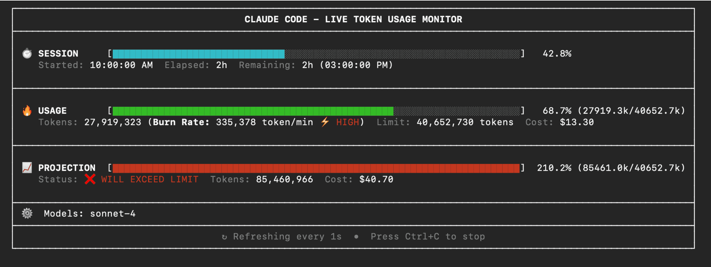

ccusage 用量统计神器

ccusage 是一个用于分析 Claude Code Token 使用量和成本的强大工具，能够从本地 JSONL 文件快速读取并生成详细的使用报告。
🚀 快速开始
推荐方式：直接运行（无需安装）
得益于 ccusage 极小的包体积，您可以直接运行，无需安装：
# 使用 bunx（推荐，速度更快）
bunx ccusage
# 使用 npx
npx ccusage@latest
# 使用 deno（需要权限标志）
deno run -E -R=$HOME/.claude/projects/ -S=homedir -N='raw.githubusercontent.com:443' npm:ccusage@latest💡 提示: 我们推荐使用
bunx而非npx，能显著提升运行速度！
可选：全局安装
由于包体积很小，安装也是可选的：
npm install -g ccusage📊 主要功能
报告类型
# 基础用法
ccusage # 显示每日报告（默认）
ccusage daily # 每日 Token 使用量和成本
ccusage monthly # 按月汇总报告
ccusage session # 按对话会话统计用量
ccusage blocks # 5小时计费窗口统计
ccusage statusline # 状态栏的紧凑显示模式（Beta）实时监控
ccusage blocks --live # 实时使用量仪表板筛选和选项
# 日期范围筛选
ccusage daily --since 20250525 --until 20250530
# JSON 格式输出
ccusage daily --json
# 按模型成本细分
ccusage daily --breakdown
# 时区设置
ccusage daily --timezone UTC
# 本地化设置
ccusage daily --locale ja-JP项目分析
# 按项目/实例分组
ccusage daily --instances
# 筛选特定项目
ccusage daily --project myproject
# 组合使用
ccusage daily --instances --project myproject --json紧凑模式
# 强制紧凑表格模式（适合截图分享）
ccusage --compact
ccusage monthly --compact📸 界面预览

✨ 核心特性
- 📊 每日报告: 按日期汇总显示 Token 使用量和成本
- 📅 月度报告: 按月汇总显示 Token 使用量和成本
- 💬 会话报告: 按对话会话分组显示使用量
- ⏰ 5小时区块报告: 跟踪 Claude 计费窗口内的使用量，支持活跃区块监控
- 📈 实时监控: 通过
blocks --live提供实时仪表板，显示活跃会话进度、Token 消耗率和成本预测 - 🚀 状态栏集成: 为 Claude Code 状态栏钩子提供紧凑的使用量显示（Beta）
- 🤖 模型跟踪: 查看您正在使用的 Claude 模型（Opus、Sonnet 等）
- 📊 模型细分: 通过
--breakdown标志查看各模型的成本细分 - 📅 日期筛选: 使用
--since和--until按日期范围筛选报告 - 📁 自定义路径: 支持自定义 Claude 数据目录位置
- 🎨 美观输出: 彩色表格格式显示，自动响应式布局
- 📱 智能表格: 在窄终端（< 100字符）下自动启用紧凑模式，显示核心列
- 📸 紧凑模式: 使用
--compact标志强制紧凑表格布局，非常适合截图和分享 - 📋 增强模型显示: 模型名称以项目符号列表显示，提升可读性
- 📄 JSON 输出: 通过
--json导出结构化 JSON 格式数据 - 💰 成本跟踪: 显示每日/月/会话的美元成本
- 🔄 缓存 Token 支持: 分别跟踪和显示缓存创建和缓存读取 Token
- 🌐 离线模式: 通过
--offline使用预缓存的定价数据，无需网络连接（仅限 Claude 模型） - 🔌 MCP 集成: 内置模型上下文协议服务器，可与其他工具集成
- 🏗️ 多实例支持: 通过
--instances标志按项目分组使用量，并筛选特定项目 - 🌍 时区支持: 通过
--timezone选项配置日期分组的时区 - 🌐 本地化支持: 通过
--locale选项自定义日期/时间格式（如 en-US、ja-JP、de-DE） - ⚙️ 配置文件: 使用 JSON 配置文件设置默认值，支持 IDE 自动完成和验证
- 🚀 超小包体积: 与其他 CLI 工具不同，我们极其注重包体积 - 即使不经过压缩也非常小巧！
💡 使用场景
1. 监控日常使用量
# 查看今天的使用情况
ccusage daily
# 查看本月使用情况
ccusage monthly2. 项目成本分析
# 查看各个项目的成本
ccusage daily --instances
# 分析特定项目
ccusage daily --project myproject --breakdown3. 实时监控
# 启动实时监控面板
ccusage blocks --live4. 数据导出
# 导出 JSON 格式数据进行进一步分析
ccusage daily --json > usage_data.json📖 完整文档
更详细的文档请访问：ccusage.com
🤔 为什么选择 ccusage？
- 零安装开销: 直接运行，无需全局安装
- 超快启动: 极小的包体积确保快速启动
- 功能全面: 从基础统计到实时监控，应有尽有
- 输出美观: 彩色表格显示，数据清晰易读
- 灵活配置: 支持多种输出格式和筛选选项
- 离线工作: 支持离线模式，无需网络连接
ccusage 是每个 Claude Code 用户必备的工具，帮助您更好地了解和控制 AI 编程的成本。立即试用，让您的 Claude Code 使用更加透明和高效！